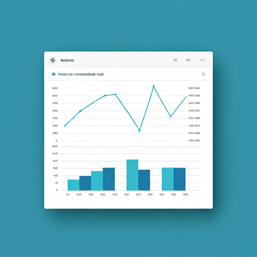

timer
Días sin agua
03
Unidos por el suministro digno en el Barrio Divino Niño 1. Facilitamos el acceso a información vital y gestión colectiva del agua.
Monitoreamos cada gota para asegurar que llegue a cada hogar.
Ubica los puntos de distribución activos y el estado de las tuberías principales.
¿Fugas o falta de presión? Reporta incidentes y sigue el proceso de resolución.

Accede a estadísticas de uso y donaciones para el mantenimiento del sistema.
Localiza los puntos de distribución de agua potable autorizados en el Barrio Divino Niño 1. Consulta horarios y precios actualizados desde la base de datos.
Reporta problemas y consulta el estado de la red hídrica
Estamos aquí para escucharte y trabajar de la mano
Comunícate con la junta comunitaria del Barrio Divino Niño 1 para consultas, emergencias o voluntariado.
Teléfono
+57 300 123 4567
Correo
contacto@comunidadazul.co
Dirección
Calle Principal #45-22, Barrio Divino Niño 1